01 · 화면 구성
화면 개요
원격제어 화면은 상단 헤더, 영상, 로봇 제어 버튼, 그리고 하단의 임무 · 지도 · 로그(음성) 영역으로 나뉩니다. 이미지의 번호는 이 가이드의 장 번호와 같습니다.
레이아웃 A 기준. 번호는 장 번호입니다.
상단 헤더
접속한 로봇 정보와 통신 · 배터리 · 자세 · 속도 상태. → 02장
영상 영역
카메라 그리드와 밝기 · 화질 · 레이아웃 도구 막대. → 03장
로봇 제어 버튼
적재함 · 헤드램프 · 게임패드 · 자동정지 · 브레이크. → 03장
임무 패널
임무 진행 상황과 단계 처리 버튼. → 04장
지도
로봇 위치 · 경로 · 목적지. → 04장
로그와 음성 송출
이벤트 히스토리와 기체 스피커 송출. → 05장
01 · 화면 구성
레이아웃 A · B
영상과 패널 배치는 두 가지 중 편한 쪽을 고를 수 있습니다. 영상 오른쪽 아래의 레이아웃 버튼을 누르면 언제든 바뀌고, 창 크기를 바꿔도 선택한 배치가 유지됩니다.
레이아웃 A — 영상 상단 · 3분할 하단
영상을 화면 위쪽에 넓게 두고, 임무 · 지도 · 로그를 아래에 나란히 보여줍니다. 지도와 로그를 함께 넓게 보면서 주행을 지켜볼 때 좋습니다.
레이아웃 B — 영상 좌측 · 사이드패널 우측
영상을 세로로 크게 보여주고, 임무 · 로그 · 횡단 안내를 오른쪽 패널에 쌓아 보여줍니다. 로봇 제어 버튼은 영상 아래에 놓입니다. 좁은 길이나 야간처럼 영상을 크게 봐야 할 때 좋습니다.
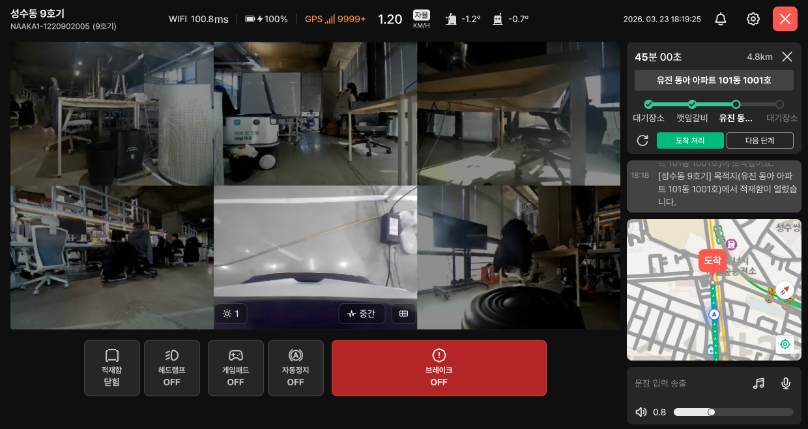
02 · 상태 확인
상단 헤더
헤더에서 지금 접속한 로봇의 상태를 한눈에 확인할 수 있습니다. 왼쪽은 로봇 정보, 가운데는 통신 · 배터리 · 자세 · 속도, 오른쪽은 알림센터 · 설정 · 연결 해제 버튼입니다.
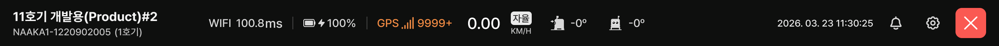
로봇명 · 시리얼번호 · 호기
접속한 로봇의 이름, 시리얼번호, 호기 번호입니다. 올바른 로봇에 접속했는지 먼저 확인하세요.
네트워크 지연
로봇이 연결된 통신망(WIFI / LTE)과 응답 지연 시간(ms)입니다. 지연이 길어지면 색이 바뀌어 알려줍니다.
- 정상 · 200ms 미만
- 주의 · 200ms 이상
- 경고 · 500ms 이상 — 조작 반응이 눈에 띄게 늦어지니 주의하세요.
배터리 · 충전 상태
남은 배터리와 충전 상태입니다. 배터리 옆 아이콘 모양으로 유선 · 무선 여부와 실제 충전 중인지 알 수 있습니다.
- 충전하지 않을 때(과충전 포함)
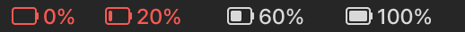
- 유선 충전 중
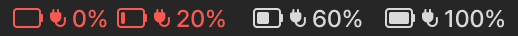
- 유선으로 연결됐지만 충전은 시작되지 않음
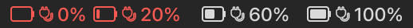
- 무선 충전 중
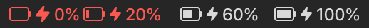
- 무선 도킹됐지만 충전은 시작되지 않음
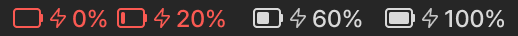
- 20% 이하가 되면 빨간색으로 바뀝니다.
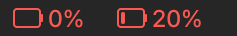
- 로봇 연결이 끊기면 배터리가 표시되지 않습니다.
GPS 수신 상태
GPS 수신 상태를 신호 막대와 숫자로 보여줍니다. 숫자가 낮을수록 수신이 좋습니다.
| 값 | 상태 | 표시 |
|---|---|---|
| 0 – 14 | 신호 좋음 | 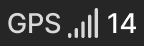 |
| 15 – 250 | 신호 있음 | 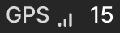 |
| 251 – 9999 | 신호 약함 | 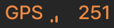 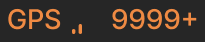 |
| 10000 ~ | GPS 신호 없음 |
주행 속도 & 컨트롤 모드
현재 주행 속도(km/h)와 누가 조종 중인지 보여줍니다.
- 자율 (AUT) 로봇이 스스로 주행 중
- 관제 (CTL) 원격으로 주행 중
설정 속도(Setting Speed)와 회전 속도(Rotation Speed)가 함께 표시됩니다. - 현장 (OP) 현장에서 직접 주행 중
Pitch & Roll (기체 자세)
로봇이 앞뒤 · 좌우로 얼마나 기울었는지 각도로 보여줍니다.
기울기 방향
| 항목 | 의미 | + / − |
|---|---|---|
| Pitch(Y) | 앞뒤 기울기 | 오르막 + / 내리막 − |
| Roll(X) | 좌우 기울기 | 우측 + / 좌측 − |
각도별 상태
| 상태 | 각도 | 이렇게 하세요 |
|---|---|---|
| 정상 | ±7° 미만 | — |
| 경고 | ±7° 이상 ±10° 미만 | 경사로나 턱을 지나는 중인지 확인하세요. |
| 위험 | ±10° 이상 | 넘어질 위험이 있습니다. 즉시 멈추고 주변을 확인하세요. |
- 로딩 중이거나 로봇 정보를 받아오지 못하면 각도 대신
-로 표시됩니다.
최근 업데이트 시간
로봇 상태가 마지막으로 업데이트된 시각입니다.
- 5초 넘게 업데이트가 없으면 시간이 강조 표시됩니다. 로봇 데이터가 들어오지 않고 있다는 뜻입니다.
알림센터
누르면 알림센터가 열립니다. 지금까지 받은 알림을 레벨별로 다시 볼 수 있습니다.
로봇 설정
누르면 오른쪽에 ‘로봇 설정’ 패널이 열립니다. → 07장
연결 해제
누르면 로봇과의 연결을 끊고 모니터링 화면으로 돌아갑니다. 원격제어 화면을 나갈 때 사용하세요.
03 · 영상과 제어
영상 영역과 카메라 제어
로봇 카메라 영상을 모아 보여주는 영역입니다. 영상 아래 가운데 도구 막대에서 밝기 · 화질 · 배치를 바꿀 수 있습니다.
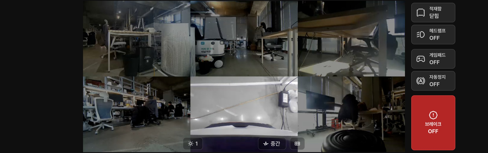
카메라 그리드
로봇에 달린 여러 카메라 영상을 한 화면에 모아 보여줍니다. 정면 · 우측 · 좌측 · 하단 · 후면 영상이 이어져 하나의 시야처럼 보입니다.
- 특정 카메라만 멈추거나 깨지면 로봇 설정에서 그 카메라만 다시 시작할 수 있습니다. → 7-4
밝기 조절
영상 밝기를 조절합니다. 밤이나 역광에서 길과 장애물이 잘 안 보일 때 사용하세요.
화질
영상 화질을 조절합니다. 네트워크 지연(1-2)이 길어져 영상이 늦게 보이면 화질을 낮춰 보세요.
카메라 그리드 변경
영상에 보여줄 카메라 구성을 바꿉니다.
- 6캠 · 정면 · 우측 · 좌측 · 하단 · 후면 영상을 모두 함께 보기
- 프론트캠 · 정면 영상만 크게 보기
레이아웃 전환
영상과 패널 배치를 레이아웃 A ↔ B로 바꿉니다. → 01장
관제 화면 연결 안 됨
영상이 아예 연결되지 않으면 아래 순서대로 시도하세요.
- 관제 화면에서 화질 낮추기 → 관제 화면 재시작
- 그래도 안 되면 XAVIER 재시작 → 로봇 재부팅 순서로 진행
03 · 영상과 제어
로봇 제어 버튼
로봇의 적재함 · 조명 · 브레이크 등을 직접 조작하는 버튼입니다. 버튼마다 현재 상태가 표시되니 누르기 전에 확인하세요. 레이아웃 A에서는 영상 오른쪽에, B에서는 영상 아래에 있습니다.
적재함
적재함을 열고 닫습니다. 버튼에 현재 상태(닫힘 / 열림)가 표시됩니다. 적재함을 연 채로 주행하면 “[적재함 주의]” 알림이 뜨니, 출발 전에 닫혀 있는지 확인하세요.
헤드램프
로봇 앞쪽 조명을 켜고 끕니다. 밤이나 어두운 실내에서 영상이 잘 보이지 않을 때 켜세요.
게임패드
PC에 연결한 게임패드로 로봇을 직접 조종할 수 있게 합니다. ON일 때만 게임패드 조작이 로봇에 전달됩니다.
자동정지
관제로 주행하는 중 장애물이나 단차를 감지하면 로봇이 자동으로 멈추는 기능입니다.
- 멈춘 구간을 빠져나가야 할 때는 주변 안전과 피해 갈 경로를 먼저 확인한 뒤 OFF 하세요.
- 구간을 통과하면 다시 ON으로 켜세요.
- 관제 주행으로 바꾸면 자동으로 ON이 됩니다.
브레이크
로봇을 그 자리에 고정합니다. 긴급 상황에서 바로 찾을 수 있도록 빨간색으로 크게 표시되어 있습니다.
- ON이면 자율주행과 직접 조종 모두 움직이지 않습니다.
04 · 임무 수행
임무 패널
지금 진행 중인 배달 임무를 확인하고, 필요하면 단계를 직접 넘길 수 있습니다.
임무 진행 중
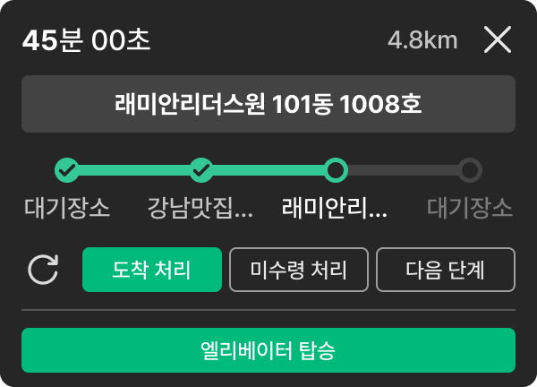
시나리오 중단
오른쪽 위 X 버튼을 누르면 진행 중인 임무 시나리오를 중단합니다.
- 임무를 꼭 취소해야 할 때만 누르세요. 로봇이 현재 경로 주행을 멈춥니다.
SLA 타이머 · 총 거리
요기요 API 연동 임무에서만 표시됩니다.
- SLA 타이머 · 목적지까지 도착해야 하는 최대 시간입니다. 배차가 시작되면 타이머가 줄어들기 시작합니다.
- 총 거리 · 대기장소에서 목적지까지의 전체 거리입니다.
현재 목적지
지금 단계의 목적지 주소입니다. 다음 단계로 넘어가면 그 단계의 목적지로 바뀝니다.
진행 단계
임무 전체 경로를 단계별로 보여줍니다. 끝난 단계는 채워진 점, 지금 단계는 강조 색으로 표시됩니다.
단계 처리 버튼
현재 단계를 직접 마치거나 다음으로 넘길 때 사용합니다.
- 새로고침 · 임무 정보를 다시 불러옵니다.
- 도착 처리 · 현재 단계를 도착 완료로 바꿉니다.
- 미수령 처리 (요기요 API 연동 임무에서만 표시) · 받는 분이 물품 수령 최대 시간이 지나도록 받지 않았을 때 누르고, 다음 단계로 넘어갑니다.
- 다음 단계 · 다음 단계로 넘어갑니다.
엘리베이터 탑승
엘리베이터를 이용하는 목적지에서만 보입니다. 누르면 엘리베이터 패널이 열립니다. → 08장
임무 없음
진행 중인 임무가 없으면 로봇 상태에 따라 임무 패널이 아래 세 가지 중 하나로 표시됩니다.
대기 상태
임무를 받을 준비가 된 상태입니다. 오른쪽 [임무 설정]을 눌러 새 임무를 배정하세요.
- 임무 시작 전에는 로그 영역에도
임무 시작 시 알림이 여기에 표시됩니다.안내만 표시됩니다.
전원 OFF · 로봇 연결 안 된 상태
로봇 전원이 꺼져 있거나, 서버에 연결하기 위해 부팅 중인 상태입니다. 이때는 임무를 설정할 수 없습니다.
- 전원을 켠 뒤 부팅이 끝나기까지 최대 3분 걸릴 수 있습니다.
04 · 임무 수행
지도
로봇의 현재 위치와 임무 경로를 지도에서 확인합니다. 영상만으로 알기 어려운 “지금 어디쯤인지”를 확인할 때 보세요.
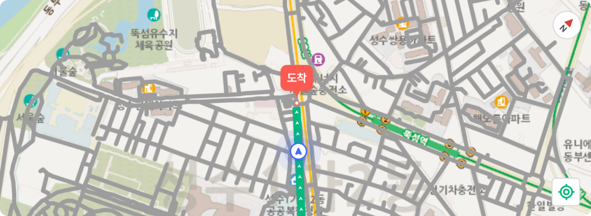
지도 · 경로 · 목적지
로봇의 현재 위치, 주행 경로(초록선), 목적지를 함께 보여줍니다.
방향(나침반)
지도의 방향을 보여줍니다. 누르면 북쪽이 위로 오도록 지도가 돌아갑니다.
현재 위치로 이동 · 주행 방향 보기
누르면 지도가 로봇의 현재 위치로 돌아오고, 주행 경로가 화면 위쪽을 향하도록 세로로 맞춰집니다.
- 지도를 드래그해 다른 곳을 보다가 다시 로봇을 따라갈 때 사용하세요.
05 · 소통
로그와 음성 송출
로봇에서 일어난 일을 시간순으로 보여주고, 로봇 스피커로 안내 방송을 할 수 있는 영역입니다. 보행자나 받는 분에게 말을 걸 때 사용하세요.
알림 로그 히스토리
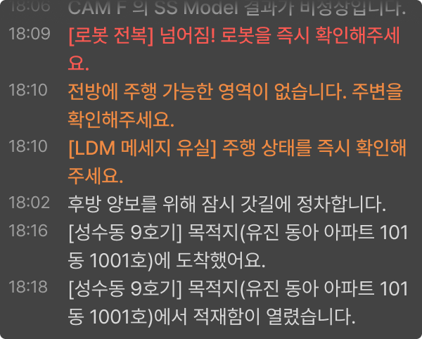
알림 로그 히스토리
로봇이 임무를 수행하며 발생한 정보 · 주의 알림을 시간순으로 보여줍니다. 주의가 필요한 알림은 주황색 · 빨간색으로 표시됩니다.
- 임무 시작 전에는
임무 시작 시 알림이 여기에 표시됩니다.만 표시됩니다.
음성 송출
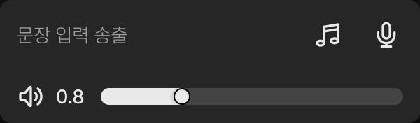
문장 입력 송출
입력한 문장을 로봇 스피커로 읽어줍니다.
- 글자를 입력하면 오른쪽 버튼이 [문장 송출]로 바뀝니다. 눌러서 방송하세요.
음원 선택
미리 준비된 안내 방송을 골라 내보냅니다. 누르면 오른쪽에 ‘음원 선택송출’ 패널이 열립니다. → 다음 장
마이크 송출
내 목소리를 로봇 스피커로 바로 내보냅니다.
- 마이크 송출 중에는 다른 방송 기능을 쓸 수 없습니다.
- 처음 사용할 때 브라우저에서 마이크 권한을 허용해 주세요. 권한이 없으면 안내 창이 먼저 뜹니다.
음량
로봇 스피커 소리 크기입니다. 처음에는 사이트 설정에 저장된 음량으로 시작합니다.
- 음원이 나오는 중에 음량을 바꾸면 지금 음원에는 바로 적용되지 않고, 다음 음원부터 적용됩니다.
실시간 듣기 · 마이크 Error 표시
실시간 듣기나 마이크 송출을 켜 둔 상태에서 화면 연결이 끊기면 버튼에 Error가 표시되고 카메라 화면에 주의 메시지가 뜹니다.05 · 소통
음원 선택송출
음성 송출 영역의 음원 선택(6-3)을 누르면 열립니다. 원하는 안내 문구를 누르면 바로 로봇 스피커로 방송됩니다.
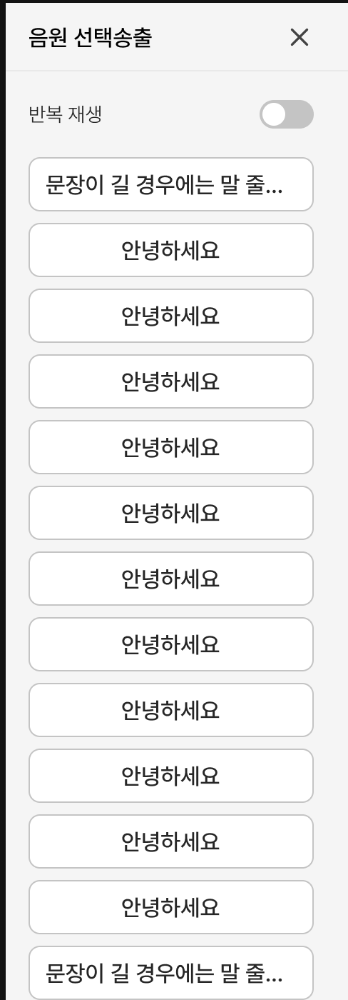
반복 재생
선택한 안내를 계속 반복합니다. 사람이 많은 곳에서 계속 안내해야 할 때 켜고, 상황이 끝나면 꼭 OFF 하세요.
음원 목록
목록에서 안내 문구를 누르면 바로 방송됩니다.
- 방송을 멈추려면 음성 송출 영역의 [음성 정지]를 누르세요.
06 · 알림
알림 레벨과 표시 규칙
대부분의 알림은 알림 로그(6-1)에 쌓입니다. 그중 현장 · 관제에서 급하게 확인해야 하는 알림은 화면에 따로 표시되며, 급한 정도에 따라 보이는 방식이 다릅니다.
Level 0 / 1 — 화면 위에 팝업으로 고정됩니다. 직접 해제하기 전까지 사라지지 않습니다.
Level 2 — 카메라 화면에 주황색 테두리가 잠깐 깜박입니다. 내용은 알림 로그에서 확인하세요.
Level 2 조치 안내 — 로봇이 멈추거나 시스템에 이상이 생기면 화면 왼쪽 위에 알림 카드가 나타나 조치 방법을 안내합니다.
Level 0 / Level 1 — 조치가 필요한 알림
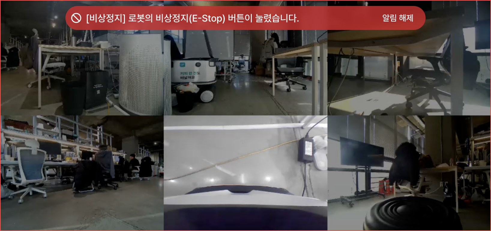
상단 팝업 고정 + 빨간 테두리
현장 · 관제에서 급하게 확인해야 하는 알림입니다. 화면 위쪽에 팝업이 고정되어, 직접 해제하기 전까지 계속 표시됩니다.
- 카메라 화면에 빨간 테두리가 함께 표시됩니다.
- 카메라로 상황을 확인한 뒤 팝업 오른쪽 [알림 해제]를 누르세요. 팝업과 빨간 테두리가 함께 사라집니다.
Level 2 — 주시가 필요한 알림
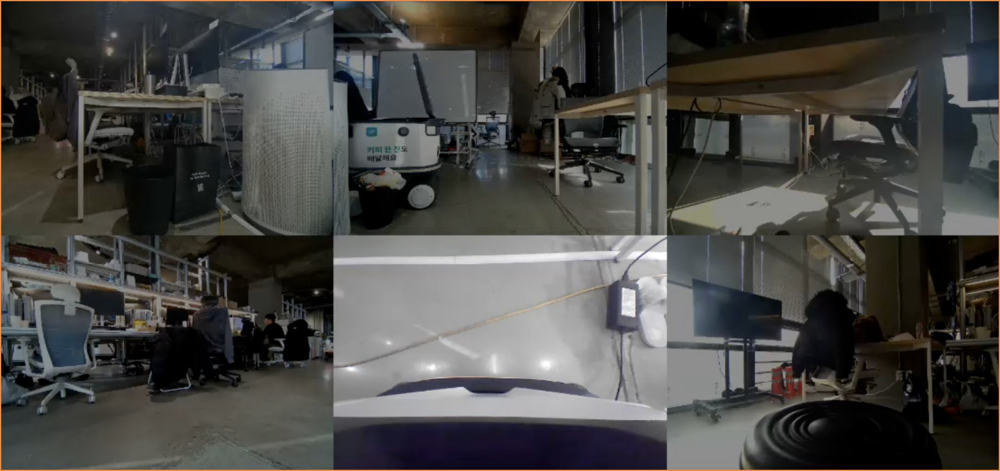
주황 테두리 3초 후 사라짐
주시가 필요한 알림입니다. 카메라 화면에 주황색 테두리가 깜박이다가 3초 뒤 자동으로 사라집니다.
- 바로 조치하기보다 상황을 지켜보라는 알림입니다.
- 어떤 알림이었는지는 알림 로그(6-1)에서 확인하세요.
Level 2 — 로봇 정지 시 조치 안내 알림
로봇이 멈췄거나 로봇 시스템에 이상이 생기면 화면 왼쪽 위에 알림 카드가 나타나, 원인과 해야 할 일을 함께 알려줍니다. 카드 색으로 알림 종류를 구분할 수 있습니다.
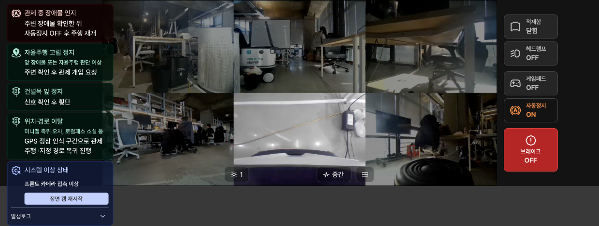
관제 중 장애물 인지
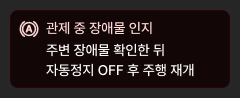
관제로 주행하는 중 자동정지(3-4)가 켜진 상태에서 장애물을 감지해 로봇이 멈추면 나타납니다.
- 주변 장애물을 확인한 뒤 자동정지를 OFF 하고 주행을 다시 시작하세요.
- 자동정지를 OFF 하면 알림이 사라집니다.
관제 요청 알림
자율주행 중 로봇이 스스로 해결하기 어려운 상황에서 멈추면 나타납니다. 카드에 멈춘 이유와 해야 할 일이 함께 표시됩니다.
- 자율주행 고립 정지 · 앞 장애물이나 자율주행 판단 이상으로 멈춘 상태입니다. 주변을 확인한 뒤 관제로 개입해 빠져나오세요.
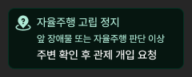
- 건널목 앞 정지 · 건널목 앞에서 멈춘 상태입니다. 신호를 확인한 뒤 횡단하세요. → 08장
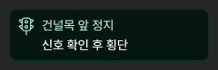
- 위치 · 경로 이탈 · 미니맵 위치 오차, 경로 소실 등으로 경로를 벗어난 상태입니다. GPS가 정상적으로 잡히는 구간까지 관제로 주행해 지정 경로로 돌아가세요.
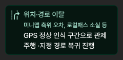
로봇 시스템 이상
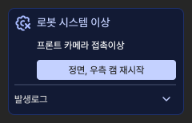
카메라 · 센서 · 구동부 등 로봇의 하드웨어 · 소프트웨어에 이상이 생기면 나타납니다. 이상이 생긴 부분과 조치 버튼이 함께 표시됩니다. 같은 알림이 반복되면 버튼을 누르세요.
- 버튼은 알림에 따라 [캠 재시작] · [XAVIER 재시작] · [로봇 재부팅] 중 하나로 바뀝니다. 로봇 설정(07장)에서 같은 조치를 찾지 않아도 바로 누를 수 있습니다.
- 로봇 전원을 직접 다시 켜야 하는 경우에는 버튼 대신 ‘로봇 전원 재시작 해주세요.’ 안내만 표시됩니다.
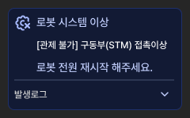
- 조치한 뒤에도 카드와 버튼은 그대로 남습니다. 로봇이 자율주행으로 다시 속도를 내는지 확인해 해결 여부를 판단하세요.
알림이 여러 개일 때 · 발생로그
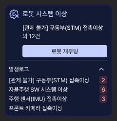
조치가 다른 알림이 2개 이상이면 가장 최근 알림과 ‘외 N건’으로 요약되고, 버튼은 가장 큰 조치 하나만 보입니다.
- 조치 크기 순서: 캠 재시작 < XAVIER 재시작 < 로봇 재부팅 < 로봇 전원 재시작
- 여러 카메라에 이상이 있으면 [캠 재시작] 버튼 하나로 관련된 카메라가 모두 재시작됩니다.
- 카드 아래 [발생로그]를 펼치면 발생한 알림 전체를 볼 수 있습니다. 반복된 알림은 옆에 횟수가 표시됩니다.
알림 접기 · 사라짐
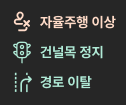
알림 카드에 마우스를 올리면 왼쪽 위에 접기 버튼이 나타납니다. 누르면 아이콘과 제목만 보이게 접히고, 다시 누르면 펼쳐집니다.
- 로봇이 다시 움직이면(속도 0.5km/h 초과) 자율주행 중에는 알림이 모두 사라지고, 관제 · 현장 모드에서는 접힌 상태로 남습니다.
- 관제 · 현장 모드에서 접어 둔 알림은 자율주행으로 돌아간 뒤 다음 알림부터 다시 펼쳐서 표시됩니다.
07 · 설정과 복구
로봇 설정 사이드패널
헤더의 로봇 설정(1-9)을 누르면 오른쪽에 열립니다. 영상이 이상하거나 로봇이 반응하지 않을 때 여기서 복구하세요. 아래로 갈수록 영향이 커지니, 항상 위쪽 항목부터 시도하세요.
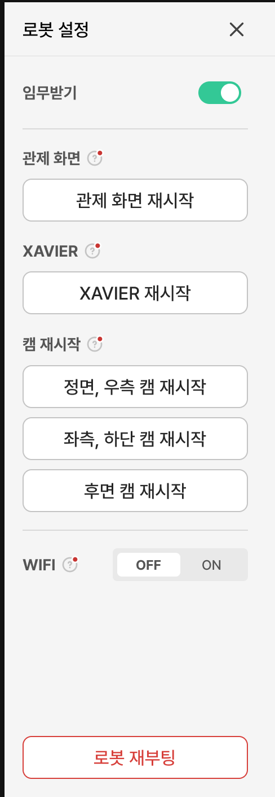
임무받기
로봇 운영을 활성화할지 선택하는 토글 버튼입니다. 로봇을 운영할 때는 ON으로 설정하세요.
관제 화면 재시작
영상 화면만 다시 시작합니다. 관제 화면이 로딩 중이거나, 업데이트는 되지만 화면이 나타나지 않을 때 사용합니다.
XAVIER 재시작
임무가 들어온 상태에서 센서 퓨전에 이상이 있을 때 사용합니다.
- 캠이 강제로 종료된 경우
- 자율주행이 동작하지 않는 경우
- 주행 중 멈춘 경우
- ADS가 뜨지 않는 경우
캠 재시작
특정 캠이 멈추거나, 특정 화면이 들어오지 않을 때 사용합니다. 문제가 있는 방향의 카메라만 골라 다시 시작합니다.
- 정면, 우측 캠 재시작
- 좌측, 하단 캠 재시작
- 후면 캠 재시작
WIFI
로봇의 WIFI를 켜고 끕니다. WIFI는 운영을 제외한, 배차 사용 후 데이터를 추출할 때 사용합니다.
- WIFI를 사용한 뒤에는 꼭 ‘WIFI 끄기’를 눌러, 안정적인 LTE 환경에서 운영하세요.
로봇 재부팅
로봇 전체를 다시 시작합니다. 다른 방법으로 해결되지 않을 때만 사용하세요. 다시 켜지기까지 2~3분 정도 걸립니다.
- 재부팅하는 동안에는 영상 · 조종 · 상태 정보가 모두 끊깁니다. 로봇이 안전한 곳에 멈춰 있는지 먼저 확인하세요.
08 · 상황 대응
건널목 · 횡단보도 대응
로봇이 건널목이나 횡단보도에 도착하면 횡단 안내 창이 자동으로 뜹니다. 주변과 신호를 확인한 뒤 [횡단하기]를 눌러야 로봇이 건너기 시작합니다.
건널목 주의 — 신호등 없음
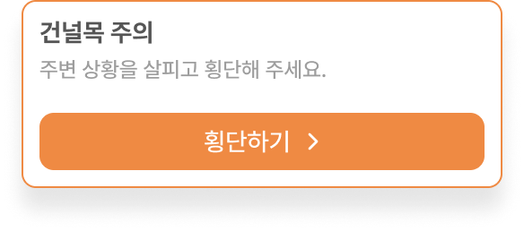
건널목 주의
건널목에 도착하면 [횡단하기] 버튼이 나타납니다. “주변 상황을 살피고 횡단해 주세요.” 안내처럼 주변을 직접 확인한 뒤 누르세요.
신호등 횡단보도 — 신호등 확대 영상 표시
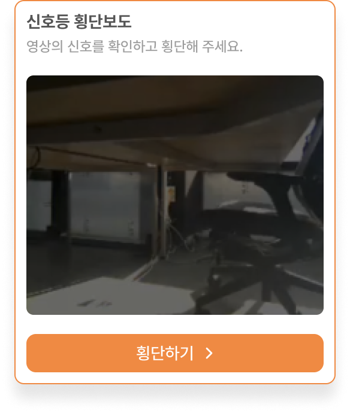
신호등 횡단보도
신호등이 있는 횡단보도에서는 신호등 확대 영상과 [횡단하기] 버튼이 함께 나타납니다. 영상에서 초록불을 확인한 뒤 누르세요.
08 · 상황 대응
엘리베이터 연동
건물 안으로 배달할 때 사용합니다. 임무 패널의 [엘리베이터 탑승](4-5)을 눌러 패널을 열고, 호출 → 탑승 → 하차 순서로 진행하세요.
호출 전
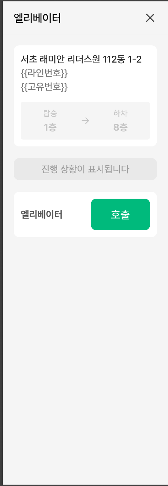
대상 엘리베이터 · 층 정보
호출할 엘리베이터의 건물 · 동과 타는 층 → 내리는 층을 보여줍니다. 호출 전에 층이 목적지와 맞는지 확인하세요.
진행 상황
호출 → 탑승층 도착 → 문 열림 → 탑승 중 → 목적층 하차 중 지금 어느 단계인지 보여줍니다.
호출
엘리베이터를 부릅니다. 엘리베이터가 타는 층에 도착하면 [취소]와 [탑승시작]을 누를 수 있습니다.
호출 후 — 승 · 하차 진행
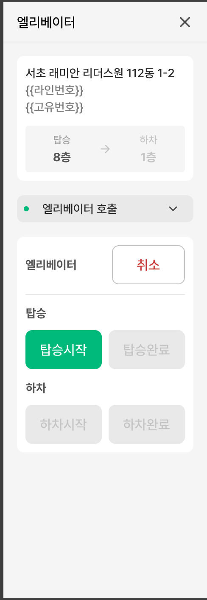
취소
엘리베이터 호출을 취소합니다. 로봇이 내릴 때까지 언제든 누를 수 있습니다.
탑승 — 탑승시작 / 탑승완료
로봇이 엘리베이터에 타는 과정을 확인하며 차례로 누릅니다.
- 엘리베이터가 도착하면 [탑승시작]을 누르세요.
- 로봇이 다 타면 [탑승완료]를 누르세요. 그 전까지는 두 버튼 모두 누를 수 있습니다.
하차 — 하차시작 / 하차완료
목적 층에 도착하면 [하차시작]을, 로봇이 다 내리면 [하차완료]를 누르세요.
자동 송출 안내 문구
탑승 중 — “엘리베이터에 탑승합니다. 탑승 뒤 제자리 회전 예정이니 안전을 위해 조금만 거리를 유지해주세요.”
하차 중 — “이번 층에서 하차합니다. 기다려주셔서 감사합니다.”
타고 내릴 때 로봇이 위 안내를 자동으로 방송하니, 따로 방송하지 않아도 됩니다.
09 · NCC 설정
시간대 설정
NCC 화면에 표시되는 시간의 기준 시간대를 설정합니다. 한국에서 운영할 때는 Korea, Republic of(UTC+09:00)를 선택하세요.
1. 시간대 설정 열기
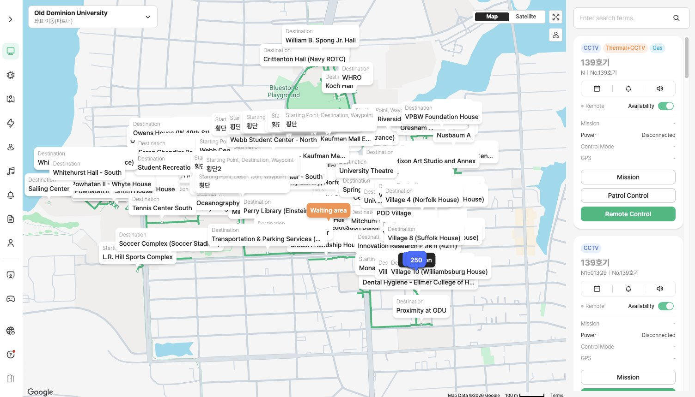
지구본 아이콘
화면 왼쪽 메뉴(SNB) 아래쪽의 지구본 아이콘을 누르면 Time Zone 창이 열립니다.
2. Time Zone 창
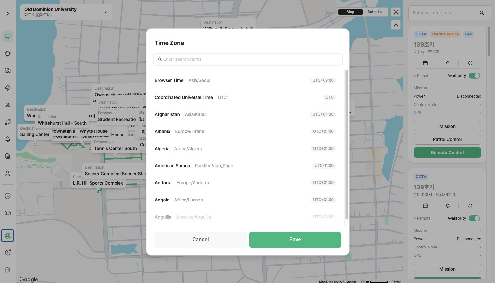
검색창
나라 이름이나 시간대 이름을 영어로 입력해 목록을 좁힐 수 있습니다.
시간대 목록
각 줄에 나라 이름 · 시간대 이름 · UTC 시차가 표시됩니다.
- Browser Time · 지금 사용하는 PC(브라우저)의 시간대입니다.
- Coordinated Universal Time · 세계 표준시(UTC)입니다.
3. 한국 시간으로 설정하기
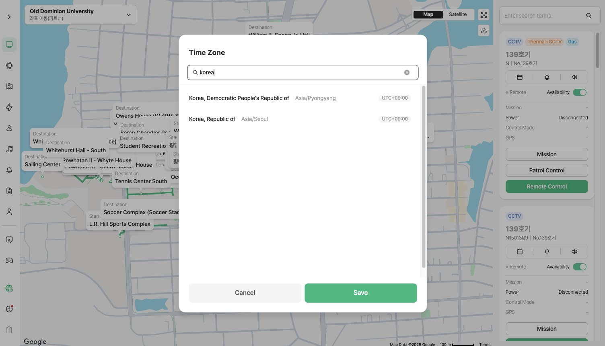
Korea, Republic of 선택
검색창에 korea를 입력한 뒤 Korea, Republic of(Asia/Seoul, UTC+09:00)를 누르세요.
- 바로 위의 Korea, Democratic People's Republic of(Asia/Pyongyang)와 헷갈리지 않도록 주의하세요.
Save
[Save]를 누르면 설정이 저장됩니다. 저장하지 않고 닫으려면 [Cancel]을 누르세요.